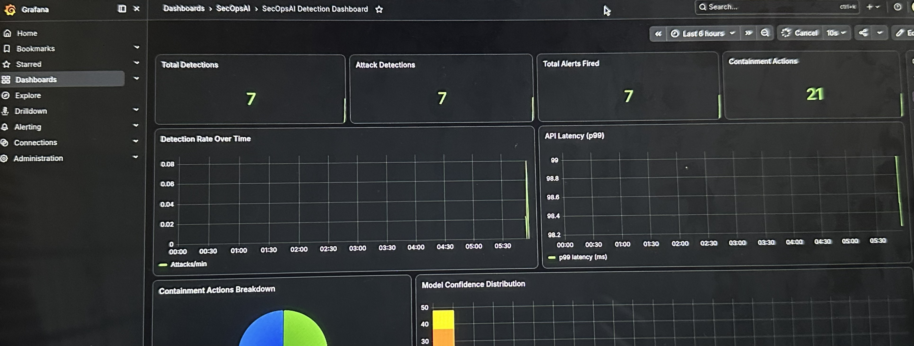

Detection Engineering · Solo Project
SecOpsAI
Problem: Improve automated analysis of security events using ML-based detection.
My role: Built the AI-driven threat detection system, including the detection pipeline, supporting application, monitoring, and deployment components.
Evidence: XGBoost classifier achieved 0.9931 F1 score with approximately 26 ms API latency.
